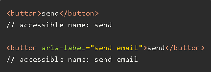
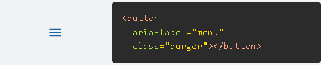
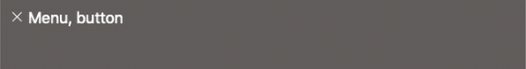
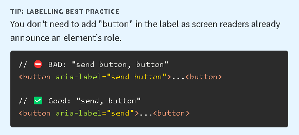
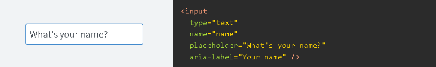
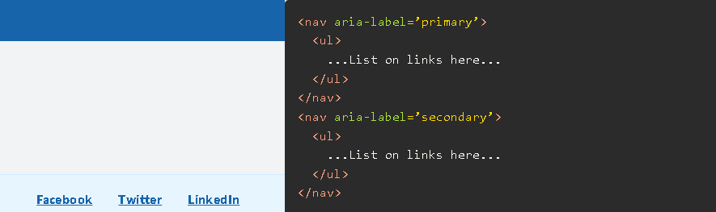
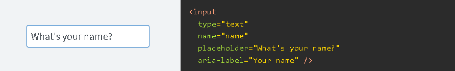
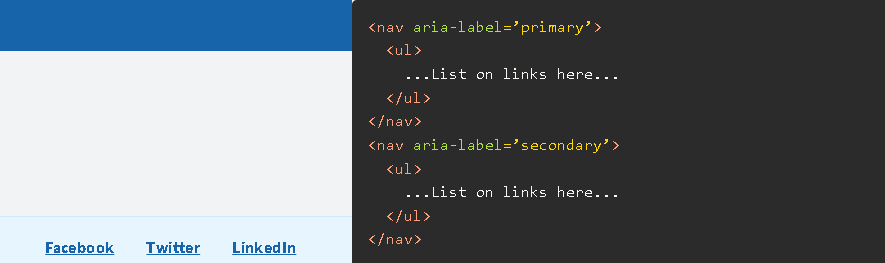
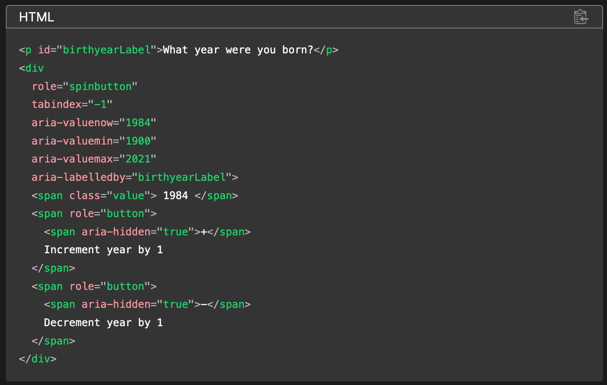

A11y & ARIA LABELS
group project
cohort 02, inTECHgration
Nested sections
what is A11Y?
A ccessibilit y
A 11 y
What is web Accessibility
Its an idea that technology must be equally accessible to people with and without disabilities
- Accessible Navigation
- Keyboard Accessibility (for screen reader when using the tab key to navigate)
- Color Contrast (Background and text color)
- Headings and Structure
- Accessible names for interactive elements
- Responsive Design
- Descriptive Links
- Alternative Text (Alt Text)
Nested sections
ARIA
ARIA — short for Accessible Rich Internet Applications — defines a way to make web content and web applications more accessible to people with disabilities.
ARIA can be used to enhance an HTML document by providing additional accessibility information about web pages
No ARIA is better than bad ARIA.Aria-keyshortcuts
The aria-keyshortcuts propertyare keyboard shortcuts that an author has implemented to activate or give focus to an element.
Example Controlling focus with tabindex. Ctrl+Shift+Enter to open
Authors MUST specify modifier keys exactly according to the UI Events KeyboardEvent key Values spec [uievents-key]
On Apple computers, meta corresponds to the Command key, and Alt to the Option key. The valid names for non-modifier keys are any printable character. A, B, 1, 2, $, Plus for a plus sign,"Space" for the spacebar, or the names of any other non-modifier key specified in the UI Events KeyboardEvent key Values spec [uievents-key]. For example, Enter, Tab, ArrowRight, PageDown, Escape, or F1. The use of "Space" for the spacebar is an exception to the UI Events KeyboardEvent key Values spec [uievents-key] as the space or spacebar key is encoded as
Authors MUST ensure
Modifier keys come first when they are part of a keyboard shortcut.
that required non-modifier keys come last when they are part of a shortcut. The order of the modifier keys is not otherwise significant. Alt+Shift+T = Shift+Alt+T
Not valid combinations
T+Shift+Alt is not valid because all of the modifier keys don't come first. Alt is not valid because it doesn't include at least one non-modifier key.
When specifying an alphabetic key, both the uppercase and lowercase variants are considered equivalent: small a and capital aa and A are the same.
When implementing keyboard shortcuts authors should consider the keyboards they intend to support to avoid unintended results. Keyboard designs vary significantly based on the device used and the languages supported.
For example, many modifier keys are used in conjunction with other keys to:
- 1create common punctuation symbols
- 2create number characters
- 3swap keyboard sides on bilingual keyboards to switch languages
- 4perform a number of other functions
For many supported keyboards, authors can prevent conflicts by avoiding keys other than ASCII letters, as number characters and common punctuation often require modifiers.
Here, the keyboard shortcut entered does not equate to the key generated.
For example, in French keyboard layouts, the number characters are not available until you press the Control key, so a keyboard shortcut defined as Control+2 would be ambiguous as this is how one would type the 2character on a French keyboard.
If the character used is determined by a modifier key, the author MUST specify the actual key used to generate the character, that is generated by the key, and not the resulting character
This convention enables the assistive technology to accurately convey what keys must be used to generate the shortcut
For example, on most US English keyboards, the percent sign % can be input by pressing Shift+5 The correct way to specify this shortcut is Shift+5 It is incorrect to specify % or Shift+% However, note that on some international keyboards the percent sign might be an unmodified key, in which case % and Shift+% could be correct on those keyboards.
If the key that needs to be specified is illegal in the host language or would cause a string to be terminated, authors MUSTuse the string escaping sequence of the host language to specify it.
Aria-keyshortcuts Rules
For example, the single-quote character can be encoded as ampersand hash 39 semi-colon' in HTML.
User agents MUST NOT change keyboard behavior in response to the aria-keyshortcuts attribute.
Authors MUST
- 1handle scripted keyboard events to process aria-keyshortcuts.
- 2provide a way to expose keyboard shortcuts so that all users can discover them, such as through the use of a tooltip.
- 3ensure that aria-keyshortcuts applied to disabled elements are unavailable.
- 4avoid implementing shortcut keys that inhibit operating system, user agent, or assistive technology functionality.
- 5carefully consider both which keys to assign and the contexts and conditions in which the keys are available to the user.
Examples of valid keyboard shortcuts include:
Nested sections
aria-colindex
The aria-colindex attribute defines an element's column index or position with respect to the total number of columns within a table, grid, or treegrid.
Hidden header
ARIA provides several attributes to provide information about table, grid, and treegrid structures. The aria-colindex attribute defines the substructure, an element's column index or position with respect to the total number of columns, within such structures.
Hidden header
an example of aria-colindex
Nested sections
aria-label
The aria-label should be used to provide a text alternative to an element that has no visible text on the screen.

How to use
You can make use of aria-label by adding it to certain HTML elements.

VoiceOver on OSX will read this button as "menu, button", as shown in the image below.

WHAT ELEMENTS CAN BE USED WITH ARIA-LABEL
- interactive elements: such as a (when href attribute is present), audio and video (when controls attribute is present), input, select, button, textarea.
- implicit landmark elements: such as header, footer, nav, main, aside, section, and form.
WHEN TO USE
You should use it when you have non-textual indication of an element's purpose, but still need to
provide text alternates for users who use assistive technology,
such as screen readers.

EXAMPLES
 



Take 3 mins and see why to use?
Nested sections
aria-details
Aria-details provides a set of information and data in a hierarchical and organized manner.
Such information may include illustrations, external links, or any form of extended information.
Hidden header
extended information that describes
the illustration from the artworks presented
Aria-autocomplete
The aria-autocomplete attribute indicates whether inputting text could trigger display of one or more predictions of the user's intended value for a combobox, searchbox, or textbox and specifies how predictions will be presented if they are made.
The aria-autocomplete property only describes the type of predictive behavior for an input element for assistive technologies; it doesn't provide the functionality.
aria-checked
description: The aria-checked
The aria-checked attribute indicates the current "checked" state of checkboxes, radio buttons, and other widgets. Note: Where possible use an HTML <input> element with type="checkbox" and type="radio" as these have built in semantics and do not require ARIA attributes. The mixed value is not supported on radio, menuitemradio, or switch and elements that inherits from these. The value will be false if mixed is set when not supported.
Hidden header
ARIA-SORT
ARIA-SORT is a part of the WAI-ARIA specification, enhancing web accessibility. It indicates if items in a table are sorted in ascending, descending, none, or other order.
The `aria-sort` attribute informs assistive technologies about the current sorting state of a column or row header. It should be added to a single header at a time and doesn't impact the actual sort order.
Example:
<table>
<thead>
<tr>
<th aria-sort="ascending">Last Name</th>
</tr>
</thead>
<tbody>
</tbody>
</table>
If a user clicks on the Last Name header, the `aria-sort` value toggles between "ascending" and "descending" with JavaScript. It provides information about the sorted column to assistive technology users.
Values:
- Ascending (`aria-sort="ascending"`): Column sorted in ascending order.
- Descending (`aria-sort="descending"`): Column sorted in descending order.
- None (`aria-sort="none"`): Column not currently sorted.
Summary
ARIA-SORT is a crucial attribute enhancing accessibility for sortable tables. It communicates the sorting state to assistive technology users, improving interaction and understanding of data tables.
Thanks for your attention!
aria-describedby
Description
The aria-describedby attribute is used to provide additional descriptive label for user interface to screen readers with more context,functionality or information about the element
Usage:
The aria-describedby attribute is used to link an element with one or more descriptions or additional information elements. These descriptions are intended to provide more information to users, and they might not necessarily be visible on the web page.
Value
- The aria-describedby attribute takes as its value the ID of one or more elements that serve as the source of the additional description.
- These elements can be paragraphs, divs, spans, or other elements containing the relevant information.
- One Element can be Connected to multiple elements
- Multiple IDs can be space-separated if you want to reference multiple elements.
Syntax
<button aria-label="Close" aria-describedby="descriptionClose" >X</button>
<div id="descriptionClose">Closing this window will discard any information entered and return you back to the main page</div>
Use Cases
- Complex Form Fields (An address form with guidelines for each field.)
- Long Descriptions for images(though image has alt tag but if we want to add extra information)
- Additional Information to Textsuch as explain abbreviation
- Buttons to provide extra information(What happens upon clicking the button)
Examples
Use Screen Reader and Tab key for examplesExample without aria-describedby
Example with aria-describedby
- Live Demo: Use Screen Reader and Tab key
- Code(GitHub Repo ↗️):
Hidden header
aria-valuetext
The aria-valuetext attribute defines the human-readable text alternative of aria-valuenow for a range widget. Numbers — even percentages — aren't always user-friendly. Assistive technologies present aria-valuenow as numeric values.
The aria-valuenow attribute defines the current value for a range widget.
Hidden header

Hidden header
The aria-valuetext attribute defines the human-readable text alternative of aria-valuenow for a range widget. Numbers — even percentages — aren't always user-friendly. Assistive technologies present aria-valuenow as numeric values.
Hidden header
If a progress bar is at 8%, what does that mean? aria-valuetext provides a way of presenting the current value in a more user-friendly, human-understandable way. For example, a battery meter value might be conveyed as aria-valuetext="8% (34 minutes) remaining".
Hidden header
The aria-valuetext attribute is used with the aria-valuenow attribute, not instead of it, unless that value is not known. aria-valuetext is only needed when the numeric value of aria-valuenow is not meaningful. For example, a range's values are numeric but may be used for non-numeric values, such as college class level.
Hidden header
The values of aria-valuenow for a 4-year college could range from 1 through 4, which indicate the position of each value in the value space. In this case, the aria-valuetext could be one of the strings: "first year", "sophomore", "junior", and enior".
Hidden header
If the numeric value is meaningful, such as a spinner with aria-valuenow="3" for how many pizza slices you want to order, aria-valuetext is not needed.
Hidden header
When both the aria-valuetext and aria-valuenow are included, the aria-valuetext is announced. When there is no aria-valuetext attribute, assistive technologies will announce the aria-valuenow attribute for the current value.
Hidden header
And this is all you need to know about the aria-valuetext! Or not? Feel free to ask any questions!
Useful resources
Project Insights
- What We Have Learned:
- general understanding of A11y and ARIA
- Challenging Aspects:
- handling conflicts while working on same branch
- What We Had Fun With:
- getting to know the reveal.js tool and its capabilities